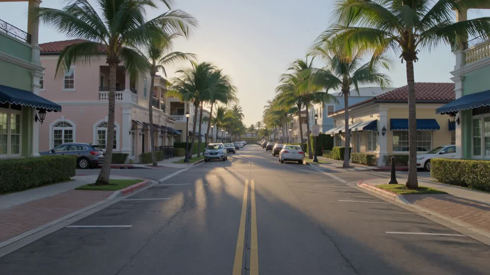

A closed-up house in a Florida summer is never quite still: heat, damp, storms and small leaks work on it every day you’re gone.

The morning round · scroll to drive on
AI-generated footage
The street is still asleep. Shutters down, lawns cut, nobody home.
Half the houses here are closed for the summer. Each one is somebody’s worry, a thousand miles away.
Yours is next on the round, the same day and time every week.
The key turns. The walk begins at the front door.
The walk-through
Every room, every visit, in the same order
Tap a room on the plan, or walk the whole route with us. The lamp goes where we go; the times are a sample morning and the plan is not to scale.
The canal side · AI-generated footage
A sample plan, not to scale.
Every door and window tried and locked
Alarm panel read, any tripped sensors noted
Mail, packages and flyers brought inside
Garage door run once, up and down
Car battery tender plugged in, if you use one
Floor checked for water, oil or droppings
Water heater and its pan checked for leaks
Washer hoses looked over
Air handler closet: the unit running, the drain line clear
Under the sink, by flashlight, for drips
Taps run so the drains don’t dry out
Fridge and freezer temperatures noted
Signs of ants or other pests
Thermostat and indoor humidity read and written down
Ceilings and window sills checked for stains
Blinds and lamps left the way you asked
Toilets flushed and showers run
Corners and closets checked for mildew
Every window tried
Screen cage looked over for tears
Pool pump running, the water level seen
Dock and seawall looked at from the lawn
Anything loose noted before storm season
How a visit works
One morning, start to finish
Ready
The forecast checked, and your notes for the house read again.
Arrive
Key in the door, alarm off, the front of the house noted as found.
The walk
Seven rooms in the same order every time, each check from the plan above.
Outside
Roof line, windows and screens from the yard; alarm set, doors tried, gone.
Your report
Dated, with photos, in your inbox. Anything urgent, a call the same morning.
After every visit
A visit, written down
The same report each time: when we arrived, what we checked, what we found, and a dated photo of anything that needs your eye. Here is what one could look like.
Visit reportSample · [date] · [address]
Arrived, alarm off, front door locked as leftFine
Garage dry; door run onceFine
Water heater pan dry; air handler drain clearFine
Kitchen: dry under the sink, fridge at [temp]Fine
Indoor humidity [reading], thermostat at [setting]Noted
Guest bath: small stain on the ceiling, photo belowFor you
Lanai screens whole; pool running; dock as leftFine
Alarm set, doors tried, leftFine
[dated photo: guest bath ceiling][dated photo: front of the house][dated photo: lanai and pool]
An example layout. The address, date, readings and photos are placeholders.
Services
What Tidelatch looks after while you’re gone
01
Scheduled visits
Weekly or every two weeks, on a day you choose: the whole walk-through and a report every time.
02
Storm visits
When a storm has a name: your storm plan carried out before it, a visit as soon as it’s safe after it, photos the same day.
03
Opening and closing the house
Before you fly in: the air turned down, the water on, the pool checked. After you leave: the house closed up the way you like it.
04
Let-ins and deliveries
Cleaners, pool and air-conditioning contractors let in and seen out; packages brought inside and noted in the report.
Opens your own email app with the message written. Nothing is sent until you press send.
01 · You call or writeWhere the house is, when you leave, when you’re back.
02 · We walk it with youBefore you go, the route together, and what matters to you: a slow drain, a sticky window.
03 · In writingVisit days, what each covers, who to call in an emergency, your storm plan.
This is a concept site. The number is from the 555-0100 to 555-0199 range and the address is at example.com, both kept for fiction, so the call and the email behave like the real thing but reach no one.